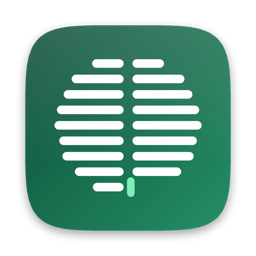
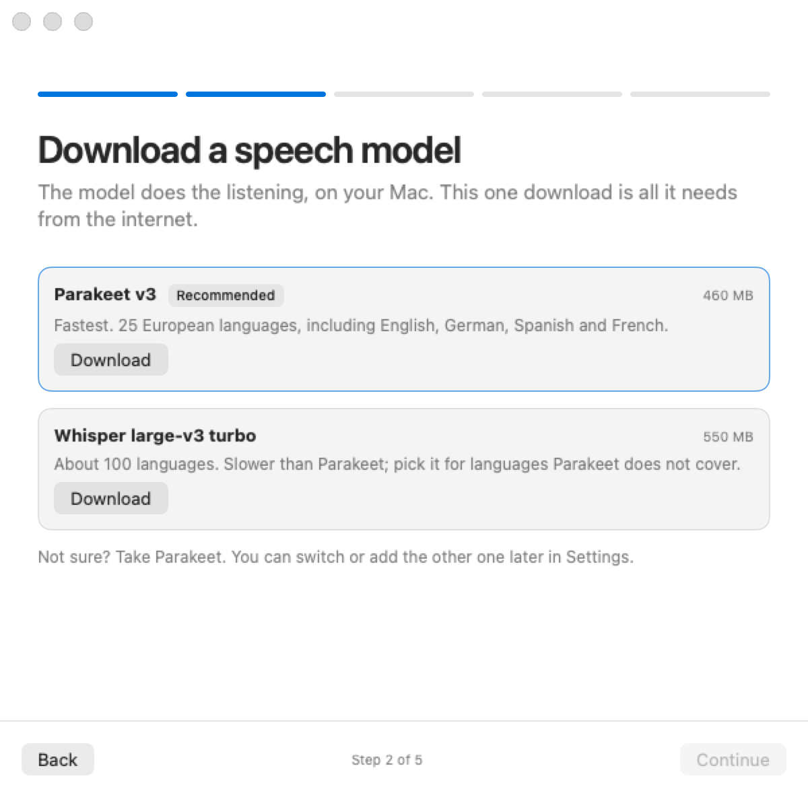
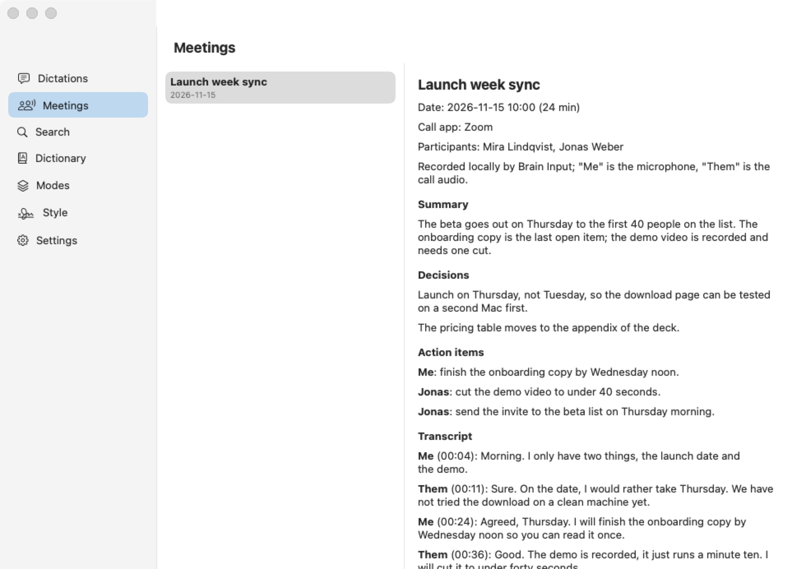

Brain InputWrites text like you would write it. In Gmail, WhatsApp, Claude Code. Plus meeting notes without a bot.
Apple Silicon · macOS 15 or newer
Demo with sample text, dictated in German. English works the same way.
The same voice comes out differently depending on where your cursor is.
Brain Input replaces Wispr Flow for dictation, Granola for meeting notes and MacWhisper for audio files.
I did not want to pay $15 a month for dictation when the hard parts are open: the speech models are free and run on a laptop. So I wrote a long brief, handed it to Claude Fable, and went away from the keyboard. A few weekend hours later there was a working app. I have been using it every day since.
It is not a business. It is free, the source is open under GPL-3.0, and it stands on the shoulders of VoiceInk, whisper.cpp and FluidAudio. The feature set is inspired by Monologue, which is the polished, supported product if that is what you need.
It is a beta. Try it, break it, and tell me what happened.
Armin
Small app, short list.
Mail, Slack, WhatsApp, Notes, your browser, your editor. Hold to talk or tap to start and stop. Esc cancels.
Speech recognition runs on your Mac with Parakeet or Whisper. It works offline. Audio is never stored or uploaded.
Add a Claude API key and the transcript is tidied and formatted. Skip the key and it still works, free, with exactly what you said.
Fix a misheard name twice and it lands in your dictionary. Style notes per app keep the text sounding like you.
Records both sides of a call on your Mac and writes a Me / Them transcript with summary, decisions and action items.
A built-in MCP server lets Claude or Cursor search your dictations and meetings and pull up your last call. Everything is plain Markdown in a folder you own, with a small CLI on top.
Drop an audio or video file (m4a, mp3, mov and more) and get a transcript, on your Mac.


It is a beta, so things will break. Feedback is the whole point.
Yes. The app is free and open source. Dictation with the local model costs nothing. The optional clean-up uses your own Claude API key and Anthropic bills you for it directly; in normal use that is cents, and the app shows the running total.
Macs with Apple Silicon (M1 or newer) on macOS 15 (Sequoia) or newer. There is no Intel, Windows or iPhone version.
Parakeet covers 25 European languages, including English, German, Spanish and French. Whisper covers about 100 and can be downloaded in Settings. The language is detected for each dictation.
The one-time model download, an anonymous "opened" count at start (app and macOS version, no ID; you can switch it off), and, only with your API key, the clean-up calls. Those contain the transcript, the app name and window title, your dictionary and style notes; in coding apps also visible window text so names are spelled right. Never audio.
On GitHub Issues. There is no support team, just me, but I read everything.